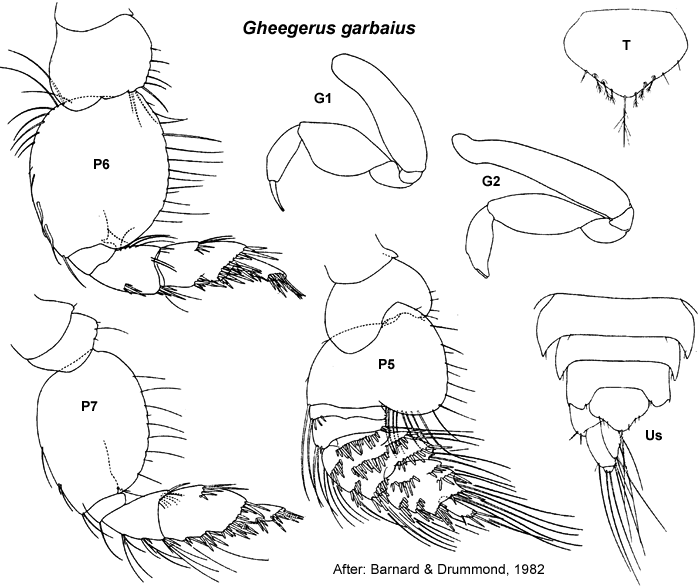

Gheegerus Barnard & Drummond, 1982: 106.
Type species. Gheegerus garbaius Barnard & Drummond, 1982, by monotypy.
Description. Based on Barnard & Drummond, 1982; 106.
Maxilla 1 palp with some setae displaced subapically.
Gnathopod 1 simple; coxa small, subequal in size to coxa 2. Gnathopod 2 minutely chelate. Pereopod 3 coxa small, smaller than coxa 4. Pereopod 4 coxa large. Pereopod 5 dactylus with robust setae, robust setae in single row. Pereopod 7 coxa without long posterior spine; basis fully expanded.
Uropod 1 inner ramus not fused to peduncle. Uropod 2 inner ramus not fused to peduncle. Telson entire.

___________________________
This
publication should be cited as: Kilgallen, N.M. & Lowry, J.K. 2008.
Urohaustoriidae (Amphipoda): World Genera and Species. Version 1. 1
January 2008. http://crustacea.net.